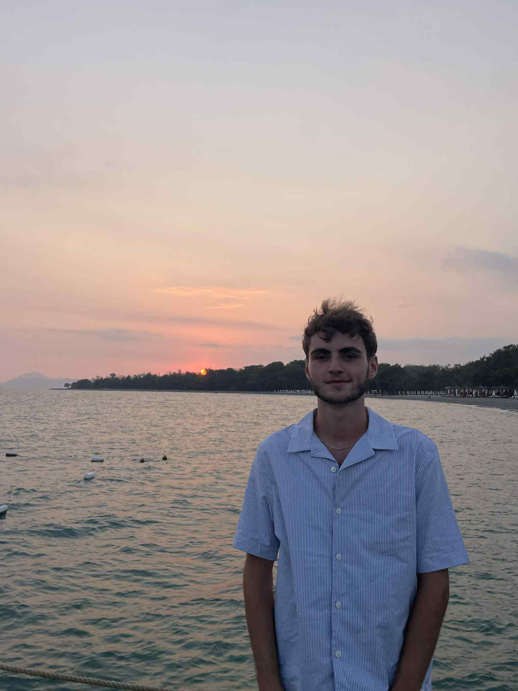

Wie ik ben, wat ik doe en waar ik naartoe wil.

Ik ben een student Toegepaste Informatica met afstudeerrichting Cyber Security Professional. Tijdens mijn opleiding en stage heb ik een sterke interesse ontwikkeld in digitale forensics, incident response en het bouwen van gestructureerde, reproduceerbare workflows.
Ik werk graag hands‑on, denk analytisch en hou ervan om technische problemen om te zetten in duidelijke, bruikbare documentatie. Mijn stage bij ConXioN heeft mij niet alleen technisch sterker gemaakt, maar ook geleerd hoe belangrijk structuur, communicatie en samenwerking zijn binnen een professioneel SecOps‑team.
Buiten cybersecurity ben ik iemand die graag bijleert, initiatief neemt en altijd zoekt naar manieren om efficiënter en slimmer te werken. Ik kijk ernaar uit om mijn carrière verder uit te bouwen in een rol waar ik zowel technisch als praktisch impact kan maken.